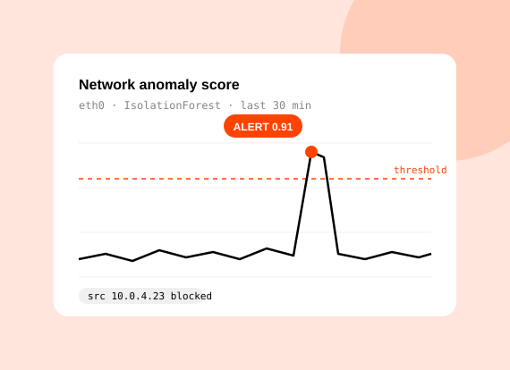
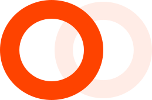
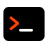
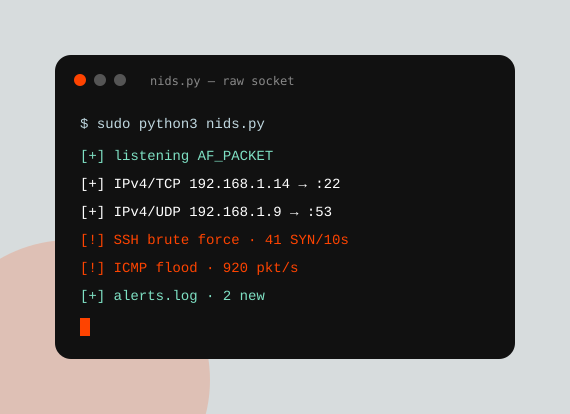
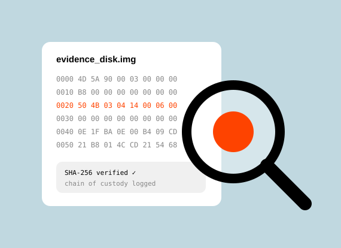
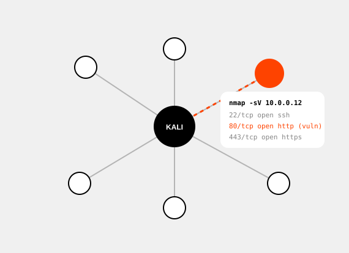

Advanced Threat Detection & Response System
Final-year project. Learns what normal traffic looks like, flags anomalies, and blocks the source automatically.
PythonScikit-learnAnomaly detection
Security Analyst.
I'm a B.Tech IT graduate (2026) who fell for security the moment I saw how much a single packet capture can tell you. I build machine-learning intrusion detection in Python, trained in digital forensics at CDAC, and test networks the way an attacker would.
Colachal, Tamil Nadu · happy to relocate to the Gulf
( 01 )
“Attackers hide inside normal traffic, so I start by learning what normal looks like.”
That's how I approach every problem. I capture packets with Wireshark, map networks with Nmap and train Scikit-learn models on that baseline, so the odd connection stands out. Then I switch sides: scanning, exploiting and writing up findings against the OWASP Top 10. Breaking things myself keeps the detection I build honest, because it's based on how real attacks actually work.
I'm from Colachal, a coastal town at the southern tip of India, and I'm now looking for my first full-time SOC or security analyst role, in India or the Gulf.
Security internships
Detection systems built
Security tools used
I speak
English
Tamil
( 02 )
Internship · Jan – Apr 2025
Trained at the Centre for Development of Advanced Computing (Govt. of India) in network and digital forensics: evidence acquisition, packet analysis with Wireshark and incident investigation.
Internship · June 2025
Hands-on penetration testing in lab networks: host discovery with Nmap and Angry IP Scanner, vulnerability assessment against the OWASP Top 10, and exploitation with Kali Linux tools.
Full-time · India or Gulf
I want to sit on a security operations team: monitoring, triaging and responding to threats, and writing the Python tooling that catches what standard rules miss. Let's talk →

( 03 )
Noorul Islam Centre for Higher Education, Kumaracoil. Final-year project in machine-learning threat detection.
Internship training at CDAC Thiruvananthapuram, Government of India.
Internship training at IT Desk, Marthandam.
Python
Scripting · socketsWireshark
Packet analysis
Kali Linux
Pen testingNmap
Recon · scanningScikit-learn
Anomaly detectionOWASP Top 10
Vuln assessment( 04 )

Final-year project. Learns what normal traffic looks like, flags anomalies, and blocks the source automatically.

Mini project. Decodes packets by hand from raw sockets and alerts on brute-force and flood patterns.

Disk and network evidence analysis with hash verification and chain-of-custody logging.

Recon, service scanning and exploitation of a lab network, finished with a written findings report.
( 05 )
I reply to every message, usually within a day. Email is the fastest way to reach me, and I'm always glad to talk shop about detection, forensics or a good packet capture.
— Arockia